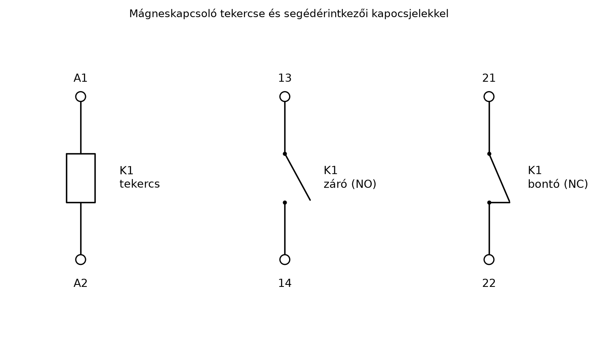
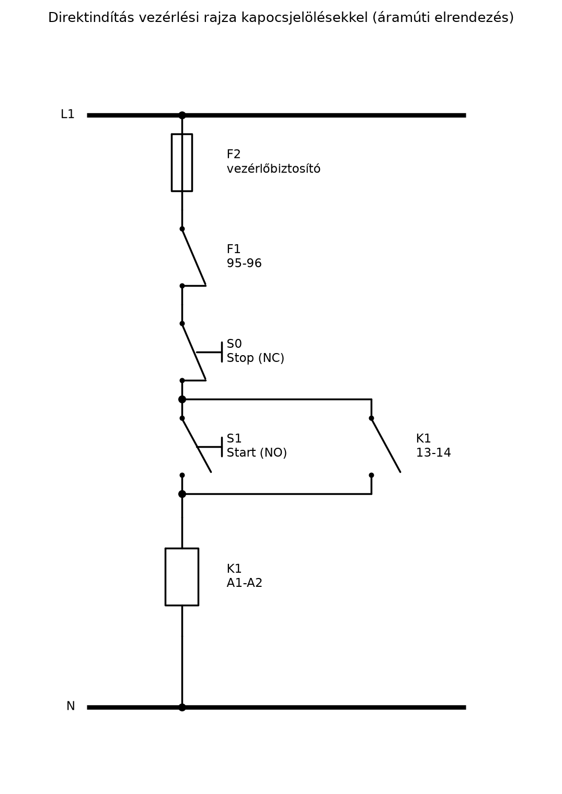

Amikor egy vezérlőszekrényt bekötünk vagy hibát keresünk benne, a kapcsolási rajzon a mágneskapcsolót nem egy „dobozként” látjuk, hanem szétválasztott rajzjelekkel: külön a tekercs, külön a főérintkezők, külön a segédérintkezők. A fizikai készüléken viszont egyetlen testben van minden. A kapocsjelölés a híd a rajz és a valóság között: ha tudod, hogy az A1-A2 a tekercs, a 13-14 egy záródó segédérintkező, a 21-22 egy bontó segédérintkező, akkor nem kell „kipróbálgatnod” a bekötést – ami hálózati feszültségen életveszélyes is lehet. Ez a fejezet éppen ezt a kapocsjelölési rendszert tanítja meg, és bemutatja a kapcsolók, mágneskapcsolók, hőkioldók rajzjeleit.
Egy mágneskapcsoló rajzjele nem egyetlen szimbólum, hanem több, kapocsjelöléssel ellátott elem. Az alábbi rajz a mágneskapcsoló tekercsét és két segédérintkezőjét mutatja.

A rajzon jól látszik: a tekercs a kapcsoló működtető jele, a segédérintkező pedig a kapcsoló állapotát jelzi vagy vezérli. A főérintkezők (1-2, 3-4, 5-6) a motort vagy más fogyasztót kapcsolják, és a kapcsolási rajz más részén, a főáramkörben jelennek meg.
A jeltábla minden kapcsolókészüléket a saját rajzjelével mutatja. A működtetés jele szaggatott vonallal kapcsolódik a mozgó érintkezőhöz: rövid vízszintes vonal az általános kézi működtetés, lefelé hajló végű vonal a nyomógomb (nyomás), kis háromszög a helyzetkapcsoló mechanikus működtetése, lépcsős „horog” a hőhatás. A kapcsolási funkció jele a rögzített érintkezőn ül: keresztvonal a szakaszoló, keresztvonal és kis kör a terhelés-szakaszoló, × a megszakító, félkör a mágneskapcsoló főérintkezője (ellenőrizendő: MSZ EN 60617-7). A HTML-változat kvíz-módjában a nevek elrejthetők.
Definíció. A kézi kapcsoló olyan kapcsolókészülék, amelyet emberi erő működtet, és az érintkezők a működtetés megszűnése után az adott állapotban maradnak (például villanykapcsoló). A nyomógomb rugóval visszatérő, azaz a nyomás megszűnése után az érintkezők visszaállnak nyugalmi helyzetükbe. A nyomógomb lehet záró (NO – normally open), amely nyugalmi helyzetben nyitott, megnyomva zárt; és bontó (NC – normally closed), amely nyugalmi helyzetben zárt, megnyomva bont.
A rajzjelekben a kapcsoló érintkezőjét egy ferde vonal jelzi; a záró érintkező a nyugalmi helyzetben nem érintkezik, a bontó pedig érintkezik. A kapcsoló és a nyomógomb a működtetés jelében különbözik: a kézi kapcsolónál az általános kézi működtetés (rövid vonal), a nyomógombnál a nyomás jele (lefelé hajló végű vonal) kapcsolódik szaggatott vonallal a mozgó érintkezőhöz (lásd a jeltáblát).
A helyzetkapcsoló olyan, gépi működtetésű kapcsoló, amely egy mozgó alkatrész (például ajtó, tolókar, gépasztal) helyzetét érzékeli. Rajzjelén a mechanikus működtető pálya látható, és a kapcsoló érintkezői gyakran ugyanazokkal a kapocsszámokkal jelöltek, mint a mágneskapcsoló segédérintkezői. A szakaszoló terhelésmentes (áram nélküli) állapotban működtethető kapcsolókészülék, amely nyitott helyzetben előírt szigetelési távolságot (leválasztást) biztosít. Terhelés alatt nem szabad nyitni; terhelés kapcsolására a terhelésszakaszoló vagy a megszakító való. Rajzjelén a rögzített érintkezőnél rövid keresztvonal jelöli a szakaszoló funkciót (ellenőrizendő: MSZ EN 60617). A szakaszoló nyitott helyzete a leválasztást biztosítja karbantartáskor, de ez az öt biztonsági szabály közül csak az első lépés: a visszakapcsolás elleni biztosítást, a feszültségmentesség ellenőrzését és a többi lépést ettől függetlenül el kell végezni.
Definíció. A mágneskapcsoló (contactor) olyan, elektromágneses működtetésű kapcsolókészülék, amely a tekercsére adott vezérlőfeszültség hatására behúz, és a főérintkezőivel nagyobb áramú fogyasztót (például motort) kapcsol. Amikor a tekercs feszültségét megszüntetjük, a rugó visszahúzza az érintkezőket.
A kapcsolási rajzon a mágneskapcsoló tekercse, főérintkezői és segédérintkezői külön-külön jelennek meg, de mindegyik rajzjelét a K1, K2, … készülék-betűjel köti össze. A tekercs rajzjele téglalap, kivezetései az A1 és A2 kapocs. A főérintkezők nagy terhelhetőségű, motorok kapcsolására alkalmas érintkezők, rajzjelük hasonló a záró érintkezőhöz, de a kapocsjelölésük 1-2, 3-4, 5-6. A segédérintkezők kisebb áramú vezérlési jelek számára: 13-14 a záródó (NO), 21-22 a bontó (NC) segédérintkező.
A termikus relé (hőkioldó) a motor túlterhelését érzékeli. A főáramköri kapcsai a motor névleges áramát vezetik, a segédérintkezői pedig a vezérlést kapcsolják: a 95-96 bontó (NC) érintkező a mágneskapcsoló lekapcsolására szolgál (a túlterhelési kioldást a vezérlőkörben sorosan megszakítja), a 97-98 záró (NO) érintkező jelezhet. A termikus relé rajzjele tartalmazza a hőkioldó jelet (egy fűtőszálat ábrázoló szimbólum) és az érintkezőket.
A motorvédő kapcsoló egyesíti a túláramvédelmet (hőkioldó és zárlati kioldó) és a kapcsoló funkciót. Kapocsjelölése a mágneskapcsolóhoz hasonló: a főáramkör 1-2, 3-4, 5-6, a segédérintkezők 13-14, 21-22. A kismegszakító (MCB) a túláramvédelem kapcsolója; rajzjelén a kapcsoló és a hő/elektromágneses kioldó jelét együtt tüntetik fel. Készülék-betűjele Q (főáramkörben) vagy F (védelemként), kapcsai páratlan (1, 3, 5: bejövő) és páros (2, 4, 6: kimenő) számokkal jelöltek.
Továbbvitt eredmény. Az itt bemutatott kapocsjelöléseket – 1-2, 3-4, 5-6, 13-14, 21-22, A1-A2, 95-96, 97-98 – használjuk a Motorok és transzformátorok rajzjelei, kapocstáblák alfejezetben a motor és transzformátor kapcsainak, valamint a Mágneskapcsolók és relék alfejezetben a mágneskapcsolók gyakorlati bekötésénél.
Szabvány. A kapcsolókészülékek rajzjeleit az MSZ EN 60617 sorozat határozza meg; a kapocsjelölés és a készülékek általános követelményei az MSZ EN 60947-1 és az MSZ EN 60947-4-1 (mágneskapcsolók) szabványokban találhatók. A kapocsjelölés a készülék gyártójának dokumentációjában is szerepel, és a szabványos jelölés betartása szakmai elvárás; a szabványokra a jogszabályok hivatkozhatnak (ellenőrizendő: a hivatkozó jogszabály). A segédérintkezők számozását az MSZ EN 60947-1 melléklete és az EN 50005/EN 50012 adja, a csatlakozók és vezetők azonosítását az MSZ EN 60445 (ellenőrizendő: aktuális kiadás, honosítás). Az aktuális szabványkiadást mindig ellenőrizd: (ellenőrizendő: aktuális szabványkiadás, kapocsjelölési változások).
A kapocsjelölési rendszer logikája:
A készülékeken a kapocsjelölést gyakran a sorkapocs mellé nyomtatják, a kapocsdoboz fedelén vagy a beépített feliraton tüntetik fel. A rajzokon a kapocsjeleket a rajzjel mellett vagy a vezetékvég-jelölésben adják meg.
Biztonsági korlát. A feladat tanműhelyi, feszültségmentes környezetre vonatkozik, vagy jogosult oktató felügyeletére. Hálózati feszültségen önállóan ne végezz munkát. A munkavégzés előtt mindig alkalmazd az öt biztonsági szabályt: lekapcsolás, visszakapcsolás elleni biztosítás, feszültségmentesség ellenőrzése, földelés és rövidre zárás, szomszédos feszültség alatti részek lefedése.
Adott: Egy K1 mágneskapcsoló, rajzán a következő kapcsok szerepelnek: A1, A2, 1, 2, 3, 4, 5, 6, 13, 14, 21, 22. Kérdés: Milyen funkciót látnak el az egyes kapcsok?
Megoldás: - A1, A2 – tekercs (vezérlőfeszültség). - 1-2, 3-4, 5-6 – főérintkezők, a háromfázisú motor kapcsolására. - 13-14 – záródó (NO) segédérintkező, öntartásra. - 21-22 – bontó (NC) segédérintkező, például reteszelésre vagy jelzésre.
Ellenőrzés: A kapocsjelölés logikája alapján a párok száma és a kezdő számok (1, 3, 5; 13, 21) megerősítik a besorolást. A gyártói adatlap a kapocsjelölés pontos kiosztását tartalmazza.
Adott: Egy motor direktindítás vezérlési rajza: S1 start nyomógomb (NO), S0 stop nyomógomb (NC), F1 hőkioldó NC érintkezője (95-96), K1 mágneskapcsoló tekercse (A1-A2), K1 öntartó NO segédérintkezője (13-14). A vezérlőfeszültség 230 V AC. Kérdés: Hogyan kössük be a vezérlőáramkört a kapocsjelölésekkel?
Megoldás: - A vezérlőfeszültség L1 fázisa (az F2 vezérlőbiztosító után) sorosan megy: F1 hőkioldó 95-96 (NC) → S0 stop (NC) → S1 start (NO) → K1 tekercs A1 → A2 → N nulla. (A soros elemek sorrendje a működést nem változtatja meg; a védelmi érintkező szokás szerint a kör elején áll.) - Az S1 start nyomógombbal párhuzamosan kötjük a K1 öntartó 13-14 érintkezőjét. Így a start megnyomásakor a K1 behúz, a 13-14 zár, és a start felengedése után is tartja a vezérlést. - A motor főáramkörét a K1 főérintkezői (1-2, 3-4, 5-6) kapcsolják.
Ellenőrzés: A kapcsolás áramúti rajza alább látható; a bekötésnél minden kapocsjelölést ellenőrzünk. A hőkioldó 95-96 bontó érintkezője túlterheléskor megszakítja a tekercs áramkörét, tehát a motor leáll.

Egy tanműhelyi gyakorlaton a tanuló egy direktindítású motorvezérlést épített. A vezérlőfeszültség bekapcsolásakor a mágneskapcsoló a start gomb megnyomása nélkül berregni kezdett, a motor nem indult tisztán. Feszültségmentesítés után kiderült, hogy az öntartó 13-14 érintkező helyett a 21-22 bontó érintkezőt kötötték a start gombbal párhuzamosan. A bontó érintkező nyugalmi helyzetben zárt, ezért a tekercs azonnal áramot kapott és behúzott; behúzáskor a 21-22 nyitott, a tekercs elengedett, az érintkező újra zárt – ez ismétlődött, a mágneskapcsoló rezgett (oszcillált). A hiba felismerését a kapocsjelölés ellenőrzése tette lehetővé: a 21-22 bontó érintkező nem lehet öntartó. A javítás után a vezérlés megfelelően működött.
Tanulság: A kapcsolási rajz és a kapocsjelölés pontos egyeztetése nélkülözhetetlen. A NO és NC érintkezők felcserélése a legtöbb vezérlési hibát okozza.
Nevezd meg a mágneskapcsoló alábbi kapocsjelöléseit: A1, A2, 1-2, 3-4, 5-6, 13-14, 21-22.
Magyarázd meg, mi a különbség a záró (NO) és a bontó (NC) érintkező rajzjele és kapocsjelölése között.
Egy mágneskapcsoló kapocsjelölése: A1-A2, 1-2, 3-4, 5-6, 13-14, 21-22. Rajzold le a kapcsolási rajzot egy direktindítású motorhoz, ahol a vezérlésben az F1 hőkioldó 95-96 (NC) érintkezője, az S1 start (NO), S0 stop (NC), a K1 tekercs és az öntartó 13-14 érintkező szerepel.
A termelésben a hőkioldó 97-98 érintkezőjét jelzőlámpa működtetésére használják. Magyarázd meg, miért záródó (NO) érintkezőre van szükség, és mi történik túlterheléskor.
Egy vezérlőszekrényben a hőkioldó túlterhelés miatt kiold (a jelzőablak vagy kar kioldott állást mutat), de a 97-98 jelzőérintkezője nem zár. A mérések szerint az érintkező nem zár. Milyen okot keresnél először? Hogyan ellenőriznéd a hiba helyét?
Tanműhelyi panelen feszültségmentesen azonosítsd a K1 mágneskapcsoló kapcsait. Kösd be a vezérlőkört a 2. példa áramúti rajza szerint (F2 → F1 95-96 → S0 → S1, vele párhuzamosan K1 13-14 → K1 A1, A2 → N), a 21-22 érintkezőt pedig egy jelzőáramkörhöz. Az öt biztonsági szabályt alkalmazd, és dokumentáld a bekötést.
A záró (NO) érintkező nyugalmi helyzetben nyitott, működtetésre zár; kapocsjelölése a funkciót mutató második számjeggyel …3-…4 (például 13-14). A bontó (NC) érintkező nyugalmi helyzetben zárt, működtetésre nyit; kapocsjelölése …1-…2 (például 21-22). A rajzjelekben a záró érintkező nem érintkezik, a bontó érintkezik nyugalmi helyzetben.
A vezérlési rajz: - Fázis (L1) → F1 hőkioldó 95-96 (NC) → S0 stop (NC) → S1 start (NO) → K1 tekercs (A1-A2) → nulla (N). - Az S1 start kapcsolóval párhuzamosan K1 öntartó 13-14. - A főáramkör: L1, L2, L3 → Q1 (zárlatvédelemre: F3 olvadóbiztosítók vagy zárlati kioldású motorvédő megszakító; ha a Q1 túlterhelés-védelmet is ad, az F1 hőkioldó elmaradhat, és a vezérlőkörbe a Q1 segédérintkezője kerül) → K1 főérintkezők (1-2, 3-4, 5-6) → F1 hőkioldó fűtőelemei (1-2, 3-4, 5-6) → motor U1, V1, W1; a motor háza PE-re kötve. - A vezérlőkör: L1 → F2 vezérlőbiztosító → F1 95-96 → S0 stop → S1 start ∥ K1 13-14 → K1 A1-A2 → N. A vezérlőkör rajza a 2. példa áramúti rajza.
A 97-98 záró (NO) érintkező túlterheléskor zár, így a jelzőlámpa világít. Ha bontó érintkező lenne, a lámpa nyugalmi állapotban világítana, és túlterheléskor kialudna – ez nem megfelelő a hiba jelzésére.
Először ellenőrizd, hogy a hőkioldó valóban kioldott állásban van-e (jelzőablak, kar), és nem csak a mágneskapcsoló engedett-e el más okból (S0, kézi lekapcsolás). Ha a készülék motorvédő kapcsoló, a zárlati (mágneses) kioldás egyes típusoknál más segédérintkezőt működtet – ezt a gyártói adatlap mutatja. Ezután az öt szabály szerint feszültségmentesített állapotban a hőkioldó TEST gombjával kioldva mérj folytonosságot a 97-98 között, majd RESET után ismét. Ha a próbakioldásnál nincs átmenet, az érintkező hibás, a készüléket cserélni kell; ha van, a jelzőkör vezetékét és a lámpát vizsgáld.
A megoldás a gyakorlati útmutató lépéseit követi: először az öt szabály szerinti feszültségmentesítés, a kapocsazonosítás a gyártói adatlap és a rajz alapján. Bekötési tábla: L1 (F2 után) → F1 95 | F1 96 → S0 11 | S0 12 → S1 13 és K1 13 | S1 14 és K1 14 → K1 A1 | K1 A2 → N; jelzőkör: L1 (F2 után) → K1 21 | K1 22 → H1 → N. A H1 akkor világít, ha a K1 nincs behúzva (motor áll); behúzáskor kialszik. Feszültségmentes folytonossági próba: a K1 kézi benyomásakor a 13-14 zár, a 21-22 bont.
A kapcsolók és mágneskapcsolók rajzjelei és kapocsjelölései nélkülözhetetlenek a vezérlési rajzok olvasásához és a fizikai bekötéshez. A mágneskapcsoló tekercse az A1-A2, főérintkezői az 1-2, 3-4, 5-6, záródó segédérintkezője a 13-14, bontó segédérintkezője a 21-22. A termikus relé bontó érintkezője a 95-96, záró érintkezője a 97-98. A kézi kapcsolók, nyomógombok, helyzetkapcsolók és szakaszolók rajzjelei a készülék működését és kapcsolási helyét mutatják. A kapocsjelölés a rajz és a valóság közötti egyértelmű kapcsolat, amelyet a szabványos jelölésrendszer (MSZ EN 60617, MSZ EN 60947) határoz meg. A leggyakoribb szerelői hiba a NO és NC érintkezők felcserélése, ezért bekötés előtt mindig ellenőrizni kell a kapocsjelölést a rajz és a gyártói adatlap alapján. A továbbvitt eredmény: a kapocsjeleket a Motorok és transzformátorok rajzjelei, kapocstáblák és a Mágneskapcsolók és relék alfejezetekben használjuk a motor és mágneskapcsoló bekötésénél.